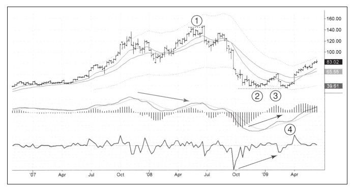

假突破伴随着底背离是市场底部的最重要模式之一，这种模式可能在每个时间框架下都会出现，当然最重要的还是在长期时间框架下给出的信号。我通常使用周线图寻找这种模式，周线图可以判定大顶和大底。
移动研究公司（RIMM）是一家科技公司，其黑莓产品被半开玩笑地称作“黑莓成瘾症”产品，因为使用黑莓产品容易让人上瘾。如图10-6所示，这只股票在熊市早期比多数股票都要坚挺，2008年夏季还创出过新高，但没能维持住新高，收盘价跌到压力线之下，图中用1标示。周线MACD顶背离信号加上假突破卖出信号，下跌由此开始，在之后的一年里，股价从近150美元跌到40美元以下，公司价值跌去3/4。

2008年10月，RIMM在40美元之下找到支撑（区域2）；随着MACD柱向上穿越零线，股价于2009年1月展开反弹，“打破了熊背”（区域3）。在区域4，RIMM再度跌到支撑位，跌破后创出新低。2008年RIMM的最低点是35.09美元，2009年3月跌到35.05美元，比前期低点低4美分。击穿前低一定让很多把止损设在比前期低点低一美分位置上的人遭受损失。
有时我们容易找到这种突破，在重要低点位置设置预警，当股价跌破预警价格时，只要市场收复前期低点，就准备买入。扫描这种突破可以找到很多候选股票。
底背离出现在区域4，在那里出现“丢失的右肩”模式，底部2低于零，顶部3显示熊市力量遭到遏制，底部4表明空头已经很弱以至于不能把这个指标推向低于零的位置。组合系统从红色变为蓝色表明此时可以买入，随后股价不断上涨，并且最终成为明星牛股。
相似的方法，不同的方向，在市场顶部同样表现良好。不过股价在顶部时你要做好面对市场动荡的心理准备，因为股价在顶部时的震荡幅度比在底部时可能更大。